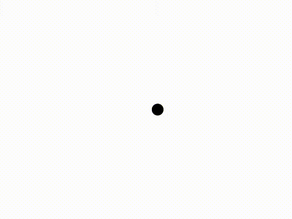
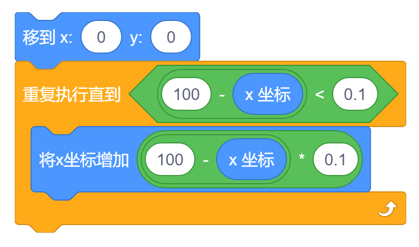
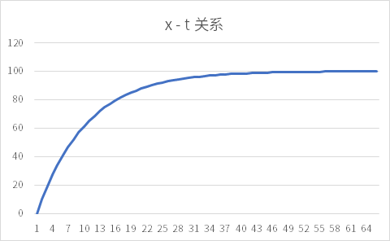

一个奇思妙想，欢迎交流！
太长不看版
对于从 (x0,0) 运动到 (x1,0)、每帧横坐标增加 p⋅(x1−x) 的非线性运动，角色横坐标 x 和时间（经过的帧数）t 之间有：
x(t)=(x1−x0)⋅(p−1)⋅(1−p)t−1+x1
以从 (0,0) 运动到 (100,0)、每帧横坐标增加 10100−x 为例：
x(t)=−90⋅(109)t−1+100
介绍
在动画中合理的使用非线性移动可以使动画看起来更加自然、舒适。在 Scratch 中最常用的非线性移动（之一）是这样的：


我们以上图所展示的运动为例，角色从 (0,0) 位置非线性的移动到了 (100,0) 的位置，每帧（每次循环）都会使横坐标增加 10100−x，因此距离目标位置越远运动速度越快、越近运动速度越慢，是一种非线性运动.
下面我们将探究角色横坐标 x 随时间 t 变化而变化的规律.

推导
我们规定第一帧（经过一次循环）时 t=1、第两帧时为 t=2 ......
以上面提到的非线性运动为例，如果 t=n 时角色的横坐标 x 为 an，则：
a1=0+10100−0=10
an=an−1+10100−an−1=109an−1+10
如果通项公式形如 an=A⋅an−1+B（A,B∈R），我们可以构造等比数列：
对于 an=A⋅an−1+B∴an=q⋅an−1+(q−1)⋅t∴an+t=q⋅(an−1+t)∴an−1+tan+t=q可得公比为 q 的等比数列 {an+t}
∴an=109⋅an−1+(109−1)⋅(−100)∴an−100=109⋅(an−1−100)∴an−1−100an−100=109
现在我们得到了一个公比为 109 的等比数列 {an−100}.
∵a1=10∴a1−100=−90
数列 {an−100} 的首项为 −90，我们可以得到它的通项公式：
an−100=−90⋅(109)n−1
因此：
an=−90⋅(109)n−1+100
所以对于这种情况，x(t)=−90⋅(109)t−1+100.
更进一步，对于从 (x0,0) 运动到 (x1,0)、每帧横坐标增加 p⋅(x1−x) 的非线性运动，有：
a1=x0+p⋅(x1−x0)an=an−1+p⋅(x1−an−1)=(1−p)⋅an−1+p⋅x1
因此：
∴q=1−p, t=1−p−1p⋅x1=−x1∴an−1−x1an−x1=1−p∴a1−x1=x0−x1+p⋅(x1−x0)=(x1−x0)⋅(p−1)∴an−x1=(x1−x0)⋅(p−1)⋅(1−p)t−1∴x(t)=(x1−x0)⋅(p−1)⋅(1−p)t−1+x1
使用表格验证，符合预期：
| t |
Scratch 非线性移动中获取到的数据 |
使用 x=−90⋅(109)t−1+100 计算得的数据 |
| 1 |
10 |
10 |
| 2 |
19 |
19 |
| 3 |
27.1 |
27.1 |
| 4 |
34.39 |
34.39 |
| 5 |
40.951 |
40.951 |
| 6 |
46.8559 |
46.8559 |
| 7 |
52.17031 |
52.17031 |
| 8 |
56.953279 |
56.953279 |
| 9 |
61.2579511 |
61.2579511 |
| 10 |
65.13215599 |
65.13215599 |
| 11 |
68.61894039 |
68.61894039 |
| 12 |
71.75704635 |
71.75704635 |
| 13 |
74.58134172 |
74.58134172 |
| 14 |
77.12320755 |
77.12320755 |
| 15 |
79.41088679 |
79.41088679 |
| 16 |
81.46979811 |
81.46979811 |
| 17 |
83.3228183 |
83.3228183 |
| 18 |
84.99053647 |
84.99053647 |
| 19 |
86.49148282 |
86.49148282 |
| 20 |
87.84233454 |
87.84233454 |
| 21 |
89.05810109 |
89.05810109 |
| 22 |
90.15229098 |
90.15229098 |
| 23 |
91.13706188 |
91.13706188 |
| 24 |
92.02335569 |
92.02335569 |
| 25 |
92.82102012 |
92.82102012 |
| 26 |
93.53891811 |
93.53891811 |
| 27 |
94.1850263 |
94.1850263 |
| 28 |
94.76652367 |
94.76652367 |
| 29 |
95.2898713 |
95.2898713 |
| 30 |
95.76088417 |
95.76088417 |
| 31 |
96.18479576 |
96.18479576 |
| 32 |
96.56631618 |
96.56631618 |
| 33 |
96.90968456 |
96.90968456 |
| 34 |
97.21871611 |
97.21871611 |
| 35 |
97.4968445 |
97.4968445 |
| 36 |
97.74716005 |
97.74716005 |